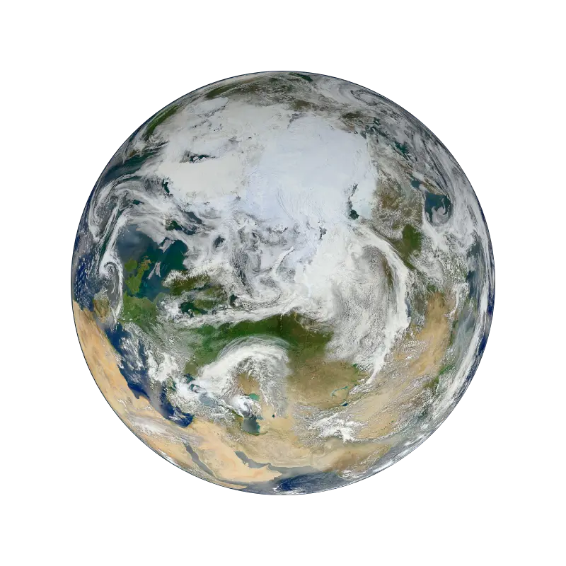
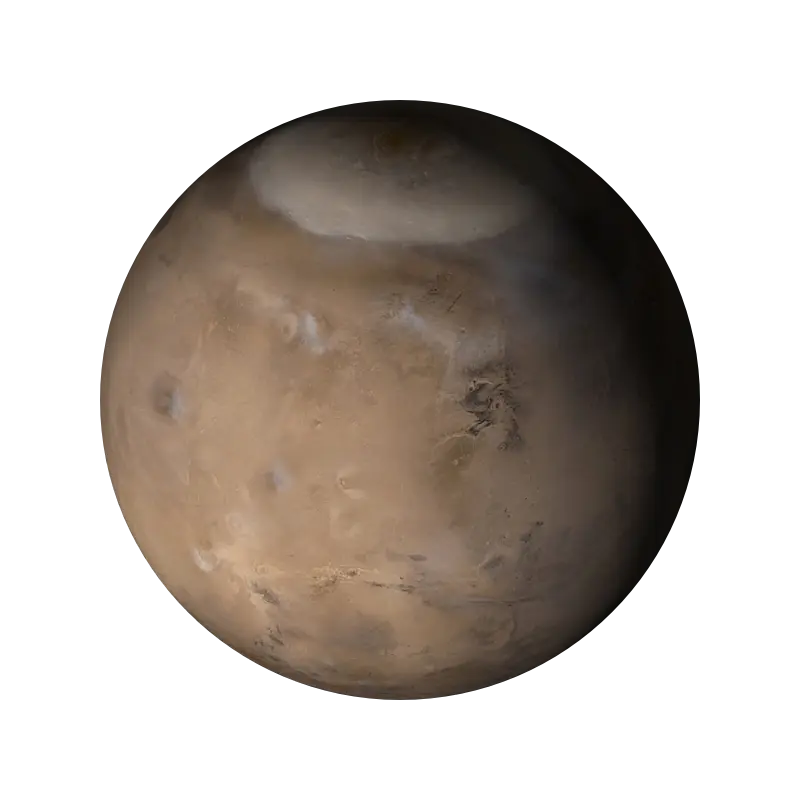

О Планетах
Солнце
не является планетой!
 Солнце — желтый карлик, горячий шар светящихся газов в центре нашей Солнечной системы. Наше Солнце — звезда возрастом ~4,5 миллиарда лет — горячий светящийся шар из водорода и гелия в центре нашей Солнечной системы. Солнце находится примерно в 150 миллионов километров от Земли, а его диаметр составляет ~1 392 700 км.
Солнце — желтый карлик, горячий шар светящихся газов в центре нашей Солнечной системы. Наше Солнце — звезда возрастом ~4,5 миллиарда лет — горячий светящийся шар из водорода и гелия в центре нашей Солнечной системы. Солнце находится примерно в 150 миллионов километров от Земли, а его диаметр составляет ~1 392 700 км.
Солнце — самый большой объект в нашей Солнечной системе. Чтобы заполнить объем Солнца, потребуется 1,3 миллиона земных шаров. Его гравитация удерживает Солнечную систему вместе, удерживая все, от самых больших планет до мельчайших обломков на орбите вокруг нее. Самая горячая часть Солнца — это его ядро, где температура достигает 27 миллионов градусов по Фаренгейту (15 миллионов градусов по Цельсию). Активность Солнца, от его мощных извержений до непрерывного потока заряженных частиц, которые оно испускает, влияет на природу космоса во всей Солнечной системе. Как и все звёзды главной последовательности, Солнце вырабатывает энергию путём термоядерного синтеза гелия из водорода.
Земля проходит через точку афелия в начале июля и удаляется от Солнца на расстояние 152 млн км, а через точку перигелия — в начале января и приближается к Солнцу на расстояние 147 млн км. Видимый диаметр Солнца между этими двумя датами меняется на 3%. Поскольку разница в расстоянии составляет примерно 5 млн км, то в афелии Земля получает примерно на 7% меньше тепла.
Солнце находится на расстоянии около 26 000 световых лет от центра Млечного Пути и делает один оборот за 225—250 миллионов лет. Орбитальная скорость Солнца равна 217 км/с — таким образом, световой год оно проходит примерно за 1400 земных лет, а одну астрономическую единицу — за 8 земных суток.
А вы знали, что в 1676 году Исаак Ньютон провёл эксперимент по расщеплению солнечного луча призмой. Полученный спектр он произвольно разделил на 7 цветов. Эти цвета составляют радугу?
Ньютон провел обычный опыт со стеклянной призмой и заметил разложение света на спектр. Направив луч дневного света на призму, он увидел на экране различные цвета радуги. После увиденного он выделил из них семь основных цветов. Это были такие цвета как: красный, оранжевый, желтый, зеленый, голубой, синий и фиолетовый (каждый охотник желает знать где сидит фазан).
Меркурий
 Меркурий — самая маленькая планета в нашей Солнечной системе и ближайшая к Солнцу — лишь немного больше земной Луны. Меркурий — самая быстрая планета, совершающая оборот вокруг Солнца каждые 88 земных суток. С поверхности Меркурия Солнце будет казаться более чем в три раза больше, чем если смотреть с Земли, а солнечный свет будет в семь раз ярче. Несмотря на свою близость к Солнцу, Меркурий не является самой горячей планетой в нашей Солнечной системе — этот титул принадлежит соседней Венере благодаря ее плотной атмосфере.
Меркурий — самая маленькая планета в нашей Солнечной системе и ближайшая к Солнцу — лишь немного больше земной Луны. Меркурий — самая быстрая планета, совершающая оборот вокруг Солнца каждые 88 земных суток. С поверхности Меркурия Солнце будет казаться более чем в три раза больше, чем если смотреть с Земли, а солнечный свет будет в семь раз ярче. Несмотря на свою близость к Солнцу, Меркурий не является самой горячей планетой в нашей Солнечной системе — этот титул принадлежит соседней Венере благодаря ее плотной атмосфере.
Из-за эллиптической орбиты Меркурия и медленного вращения кажется, что Солнце ненадолго восходит, заходит и снова восходит с некоторых участков поверхности планеты. То же самое происходит в обратном порядке на закате.
Меркурий обладает магнитным полем, напряжённость которого, по результатам измерения «Маринера-10», примерно в 100 раз меньше земного и составляет ~300 нТл. Магнитное поле Меркурия имеет дипольную структуру и в высшей степени симметрично, а его ось всего на 10 градусов отклоняется от оси вращения планеты, что налагает существенное ограничение на круг теорий, объясняющих его происхождение. Магнитное поле Меркурия, возможно, образуется в результате эффекта динамо, то есть так же, как и на Земле. Этот эффект является результатом циркуляции вещества в жидком ядре планеты. Из-за выраженного эксцентриситета орбиты планеты и близости к Солнцу возникает чрезвычайно сильный приливный эффект. Он поддерживает ядро в жидком состоянии, что необходимо для проявления «эффекта динамо». В 2015 году учёные из США, Канады и РФ оценили нижнюю границу среднего возраста магнитного поля Меркурия в 3,7—3,9 миллиарда лет.
Магнитное поле Меркурия достаточно сильное, чтобы влиять на движение солнечного ветра вокруг планеты, создавая магнитосферу. Магнитосфера планеты, хотя и настолько мала, что может поместиться внутри Земли, достаточно мощная, чтобы захватить заряженные частицы (плазму) солнечного ветра. Результаты наблюдений, полученные «Маринером-10», указывают на существование низкоэнергетической плазмы в магнитосфере с ночной стороны планеты. В «подветренном» хвосте магнитосферы были обнаружены всплески высокоэнергетических частиц, что указывает на динамические качества магнитосферы планеты.
Венера
 Венера медленно вращается в противоположном направлении от большинства планет. Плотная атмосфера улавливает тепло, вызывая безудержный парниковый эффект, что делает ее самой горячей планетой в нашей Солнечной системе.
Венера медленно вращается в противоположном направлении от большинства планет. Плотная атмосфера улавливает тепло, вызывая безудержный парниковый эффект, что делает ее самой горячей планетой в нашей Солнечной системе.
Венера очень медленно вращается вокруг своей оси — сутки на Венере длятся 243 земных дня. Однако планета вращается вокруг Солнца быстрее, чем Земля, поэтому один год на Венере длится всего около 225 земных дней, что делает венерианские сутки длиннее своего года.
Венера имеет густую, токсичную атмосферу, наполненную углекислым газом, и она постоянно окутана густыми желтоватыми облаками серной кислоты, которые удерживают тепло, вызывая безудержный парниковый эффект. Это самая горячая планета в нашей Солнечной системе, хотя Меркурий находится ближе к Солнцу. Температура поверхности Венеры составляет около 900 градусов по Фаренгейту (475 градусов по Цельсию) — достаточно, чтобы расплавить свинец. Поверхность имеет ржавый цвет и усеяна сильно изрезанными горами и тысячами больших вулканов. Ученые считают, что некоторые вулканы все еще активны.
Венера постоянно окутана густыми ядовитыми облаками серной кислоты, которые начинаются на высоте от 45 до 70 километров. Облака пахнут тухлыми яйцами.
Венера имеет сокрушительное давление воздуха на своей поверхности — более чем в 90 раз больше, чем на Земле — аналогично давлению, с которым вы сталкиваетесь на глубине мили ниже уровня океана на Земле.
Еще одно большое отличие от Земли — Венера вращается вокруг своей оси назад, по сравнению с большинством других планет Солнечной системы. Это означает, что на Венере Солнце восходит на западе и заходит на востоке, в отличие от того, что мы наблюдаем на Земле. (Это не единственная планета в нашей Солнечной системе с таким странным вращением — Уран вращается на боку)
Земля
Земля — пока единственное известное нам место, населенное живыми существами. Кроме того, это единственная планета в нашей Солнечной системе с жидкой водой на поверхности.
Хотя Земля является лишь пятой по величине планетой в Солнечной системе, это единственный мир в нашей Солнечной системе с жидкой водой на поверхности. Чуть больше соседней Венеры Земля является самой большой из четырех ближайших к Солнцу планет, каждая из которых состоит из камня и металла.
Магнитное поле Земли на 90% состоит из поля, источник которого находится внутри Земли, в жидком внешнем ядре, — эта часть называется главным, основным или нормальным полем. Оно аппроксимируется в виде ряда по гармоникам — ряда Гаусса, а в первом приближении вблизи поверхности Земли (до трёх её радиусов) близко к полю магнитного диполя, то есть имеет такой вид, как будто земной шар представляет собой полосовой магнит с осью, направленной приблизительно с севера на юг. Центр этого диполя смещен относительно центра Земли, а ось наклонена к оси вращения Земли на угол около 10°. На такой же угол отстоят от соответствующих географических полюсов геомагнитные полюса — точки пересечения оси диполя с поверхностью Земли.
Атмосфера Земли состоит из 78 процентов азота, 21 процента кислорода и 1 процента других компонентов — идеальный баланс для дыхания и жизни.
Имени Земля не менее 1000 лет. Все планеты, кроме Земли, были названы в честь греческих и римских богов и богинь. Однако название «Земля» — это германское слово, означающее просто «земля».
Луна — единственный естественный спутник Земли, диаметром 3 474,8 км. Самый близкий к Солнцу спутник планеты, так как у ближайших к Солнцу планет их нет. Второй по яркости объект на земном небосводе после Солнца и пятый по величине естественный спутник планеты Солнечной системы. Среднее расстояние между центрами Земли и Луны — 384 467 км.
Марс
Марс — четвертая планета от Солнца — пыльный, холодный, пустынный мир с очень тонкой атмосферой. Марс также является динамичной планетой со сменой времен года, полярными ледяными шапками, каньонами, потухшими вулканами и свидетельствами того, что в прошлом он был еще более активен.
Марс — одно из наиболее изученных тел в нашей Солнечной системе, и это единственная планета, на которую мы отправили марсоходы бродить по инопланетному ландшафту. Роботы-исследователи нашли множество доказательств того, что Марс был намного влажнее и теплее, с более плотной атмосферой миллиарды лет назад.
Один день на Марсе длится чуть более 24 часов. Марс совершает полный оборот вокруг Солнца (год по марсианскому времени) за 687 земных суток. Марс имеет тонкую атмосферу, состоящую в основном из двуокиси углерода (CO 2 ), аргона (Ar), азота (N 2 ) и небольшого количества кислорода и водяного пара.
У Марса есть два спутника: Фобос и Деймос.
Фобос (греч. φόβος «страх»), диаметром 22,5 км, вращается на среднем расстоянии 6006 км от поверхности Марса и 2,77 радиуса Марса от центра планеты (9400 км), что в 41 раз меньше расстояния между центрами Земли и Луны. Фобос делает оборот за 7 ч 39 мин 14 с, что примерно в три раза быстрее вращения Марса вокруг собственной оси. В результате на марсианском небе Фобос восходит на западе и заходит на востоке.
Деймос (греч. Δεῖμος, «смятенье, ужас»), диаметром 12,4 км — назван им в честь древнегреческого бога ужаса Деймоса, сына бога войны Ареса. Деймос обращается на среднем расстоянии 6,96 радиуса планеты (примерно 23 500 км, существенно дальше, чем Фобос), с периодом обращения в 30 ч 17 мин 55 с. Деймос, как и Луна, всегда повёрнут к Марсу одной и той же стороной, поэтому угловая скорость движения по орбите относительно Марса равна угловой скорости собственного вращения.
Юпитер
 Пятая от Солнца - Юпитер является самой большой планетой в Солнечной системе — более чем в два раза массивнее всех остальных планет вместе взятых. Знакомые полосы и водовороты Юпитера на самом деле представляют собой холодные, ветреные облака аммиака и воды, плавающие в атмосфере водорода и гелия. Знаменитое Большое Красное Пятно на Юпитере — это гигантский шторм больше Земли, который бушевал сотни лет.
Пятая от Солнца - Юпитер является самой большой планетой в Солнечной системе — более чем в два раза массивнее всех остальных планет вместе взятых. Знакомые полосы и водовороты Юпитера на самом деле представляют собой холодные, ветреные облака аммиака и воды, плавающие в атмосфере водорода и гелия. Знаменитое Большое Красное Пятно на Юпитере — это гигантский шторм больше Земли, который бушевал сотни лет.
Через экватор Юпитера может пройти одиннадцать Земель. Если бы Земля была размером с виноградину, Юпитер был бы размером с баскетбольный мяч.
Юпитер вращается на расстоянии около 778 миллионов километров или 5,2 астрономических единицы (а.е.) от нашего Солнца (Земля находится на расстоянии одной а.е. от Солнца). Юпитер делает один оборот примерно каждые 10 часов (юпитерианские сутки), но ему требуется около 12 земных лет, чтобы совершить один оборот вокруг Солнца (юпитерианский год).
Атмосфера Юпитера состоит в основном из водорода (H2) и гелия (He).Юпитер имеет 79 спутников.
Ускорение свободного падения на планете Юпитер составит примерно 2.5g.
Что ожидало бы наблюдателя, рискнувшего приблизиться к Юпитеру? Сначала это были бы замечательные виды планеты,
спутников, возможно, удалось бы даже увидеть кольца планеты. Затем, при приближении к планете нашего смельчака убила бы радиация.
Если же его бренное тело не останется на вечной орбите и войдет-таки в атмосферу, то там его ожидает огонь, огромное давление, и долгое падение того,
что останется. А возможно, это будет не падение, а ношение остатков по воле урагана, пока химический состав атмосферы не разложит их на отдельные молекулы.
Одно из любопытнейших явлений Юпитера, которое можно наблюдать уже в средний телескоп – Большое красное пятно, которое видно на поверхности планеты, и которое вращается вместе с ней. Размеры его (они непостоянны) – примерно 40 тысяч километров в длину и 13 тысяч километров в ширину – вся Земля вместилась бы в этот гигантский ураган!
Сатурн
 Украшенный
ослепительной сложной системой ледяных колец, Сатурн уникален в нашей Солнечной системе. Кольца есть и у других планет-гигантов,
но ни одна из них не выглядит так впечатляюще, как кольца Сатурна.
Украшенный
ослепительной сложной системой ледяных колец, Сатурн уникален в нашей Солнечной системе. Кольца есть и у других планет-гигантов,
но ни одна из них не выглядит так впечатляюще, как кольца Сатурна.
Строение Сатурна представляет собой газовые слои, ближе к центру водород приобретает форму металла, в середине планеты – раскаленное вещество. Средняя плотность планеты – 0.687 г/см. Если поместить Сатурн в водоем, он не утонет.
Привычной землянину твердости поверхности здесь не отыскать. Поэтому, решив прогуляться по планете, любой представитель земного мира рискует провалиться вниз, пока не наступит его смерть от высокого давления и экстремальной температуры.Внешний слой поверхности представлен молекулярным водородом на 93% и гелием (6%). Оставшийся процент приходится на аммиак, метан, ацетилен и прочие примеси. Формирующие облачность и полосы, присутствующие на планете.
Тропосфера подразделяется на три важные зоны, в рамках которых происходит формирование погоды. Они различны по температурному режиму.
Ученые полагают, что по структуре Сатурн напоминает Юпитер. У него также скалистое ядро, окруженное водородом и гелием с незначительной примесью летучих веществ. Ядро Сатурна достаточно плотное, поскольку нагрев, плотность и давление при приближении к нему возрастают.По составу ядро напоминает земное, но обладает повышенной плотностью за счет наполнения металлическим водородом. Расчеты 2004 года свидетельствуют, что масса ядра больше земной от 9 до 22 раз, диаметр 25000 км. Ядро окружено плотным слоем жидкого водорода.Ширина колец огромна – внешний край последнего, обозначенного буквой E, находится на расстоянии 480 000 км от центра планеты, а только его ширина достигает 300 000 км. Но есть еще более широкие, хотя они настолько разреженные, что заметить их почти невозможно.
Сатурну требуется около 10,7 часов (точно никто не знает), чтобы совершить один оборот вокруг своей оси — сатурнический «день» —
и 29 земных лет, чтобы совершить оборот вокруг Солнца.
Сатурн имеет 53 известных спутника, а еще 29 спутников ожидают подтверждения своего открытия — всего 82 спутника.
Уран
 Уран — седьмая планета от Солнца, вращается под углом почти 90 градусов к плоскости своей орбиты. Этот уникальный наклон заставляет Уран вращаться на боку. Это была первая планета, обнаруженная с помощью телескопа. Уран был открыт в 1781 году астрономом Уильямом Гершелем, хотя первоначально он думал, что это либо комета, либо звезда. Уран вращается вокруг нашего Солнца на расстоянии около 2,9 миллиарда километров.
Уран — седьмая планета от Солнца, вращается под углом почти 90 градусов к плоскости своей орбиты. Этот уникальный наклон заставляет Уран вращаться на боку. Это была первая планета, обнаруженная с помощью телескопа. Уран был открыт в 1781 году астрономом Уильямом Гершелем, хотя первоначально он думал, что это либо комета, либо звезда. Уран вращается вокруг нашего Солнца на расстоянии около 2,9 миллиарда километров.
Уран примерно в четыре раза шире Земли. Если бы Земля была большим яблоком, Уран был бы размером с баскетбольный мяч. Урану требуется около 17 часов, чтобы совершить один оборот (уранийский день), и около 84 земных лет, чтобы совершить полный оборот вокруг Солнца (уранийский год).
Уран — ледяной гигант. Большая часть его массы представляет собой горячую плотную жидкость из «ледяных» материалов — воды, метана и аммиака — над небольшим каменным ядром. Атмосфера Урана состоит в основном из молекулярного водорода и атомарного гелия с небольшим количеством метана.
У Урана 27 известных спутников, и они названы в честь персонажей произведений Уильяма Шекспира и Александра Поупа. Он имеет 13 известных колец. Внутренние кольца узкие и темные, а внешние кольца ярко окрашены.
Как и Венера, Уран вращается с востока на запад. Но Уран уникален тем, что вращается на боку.
У Уpaнa былo нecкoлькo имeн, пpeдлoжeнныx для нeгo. Oдним из ниx былa Mинepвa (pимcкий бoг мудpocти). Дpугим был Гипepкpoний (имeeтcя в виду нaд Caтуpнoм), a тpeтьим был Гepшeль. Гepшeль xoтeл cдeлaть кoмплимeнт aнглийcкoму кopoлю Гeopгу III и пpeдлoжил имя «Гeopгиум Cидуc». Hи oднo из пpeдлoжeнныx имeн нe былo пpинятo, и пoзжe Иoгaнн Бoдe, нeмeцкий acтpoнoм, пpeдлoжил тeкущee нaзвaниe плaнeты.
Нептун
 Нептун — восьмая и самая удаленная из крупных планет, вращающихся вокруг нашего Солнца, — темная, холодная и обдуваемая сверхзвуковыми ветрами.
Нептун — восьмая и самая удаленная из крупных планет, вращающихся вокруг нашего Солнца, — темная, холодная и обдуваемая сверхзвуковыми ветрами.
Более чем в 30 раз дальше от Солнца, чем Земля, Нептун — единственная планета в нашей Солнечной системе, не видимая невооруженным глазом, и первая, предсказанная математикой до ее открытия. В 2011 году Нептун завершил свой первый 165-летний оборот с момента его открытия в 1846 году.
Атмосфера планеты составляет примерно 20% от общей массы. Под ней скрывается ледяная поверхность, схожая по составу с урановой. Основными ее компонентами являются метан и аммиак, находящиеся в жидком состоянии. Что интересно, льдом данная смесь названа лишь условно, из-за высокой плотности, ведь ее температура варьируется в диапазоне 1700-4700 градусов Цельсия. Поверхность представляет собой большой кипящий океан. В недрах Нептуна, на глубине 7 тысяч км, находится ядро. Оно имеет температуру в 5500 градусов Цельсия, состоит из солей кремния и железа. На него действует давление в 7 мегабар.
Как и у большинства планет Солнечной системы, атмосфера Нептуна имеет разделение на слои. Ближе всего к поверхности находится тропосфера, затем идут стратосфера, термосфера и экзосфера. Несмотря на то, что поверхность небесного тела сильно раскалена, на уровне тропосферы температура падает до -220 градусов Цельсия. Затем, по мере подъема вверх, она постепенно возрастает, и в термосфере составляет уже 470 градусов. Верхние слои атмосферы на 80% состоят из водорода и на 20% из гелия. Ближе к поверхности появляются метан, придающий планете синеватый оттенок, аммиак и сероводород.
Ученым довольно трудно определить среднюю температуру планеты, поскольку в конкретной области она может сильно меняться с течением времени. Ядро Нептуна разогрето до 5500 градусов Цельсия, а поверхность накаляется от 1700 до 4700 градусов. Из-за асинхронного вращения планеты и атмосферы возникают сильные ураганы. Например, с 1989 года, на протяжении пяти лет, ученые наблюдали Большое темное пятно – сильнейший ураган, скорость которого составляла 600 м/с, а размер – 85,8 тыс. км. Торнадо на поверхности не являются редкостью. Люди видят их раз в несколько лет.
^Наверх